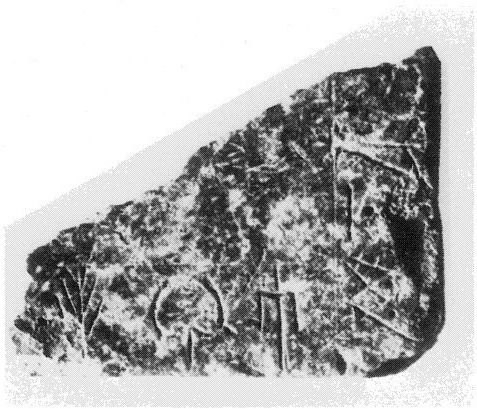
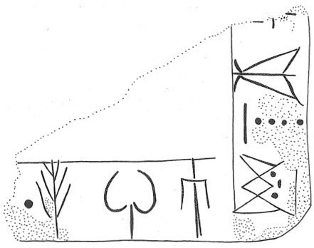

-
VRYZa1
Names
VRYZa1, VRY Za 1
Support
Stone vessel
Location
Vrysinas
Findspot
Unavailable


Scribe
Unavailable
Context
Unavailable
Dimensions
Catalogue
Readings
1 1 0 I none
1 1 0 PI none
1 1 0 NA none
2 1 0 MA none
3 2 1 SI none
4 2 1 RU none
5 2 1 TE none
5 2 2 *900 none
𐘚𐘢𐘅
𐙁
𐘤
𐘘
𐘃𐄁
IPINA
MA
SI
RU
TE*900
𐘚𐘢𐘅𐙁
𐘤𐘘𐘃𐄁
IPINAMA
SIRUTE*900
VRY Za 1
(Rethymnon Mus. 685;
72ppi image
,
72ppi image
) (GORILA IV: 61),
square serpentine
Libation Table. The inscription is written retrograde (Palaima 1988:
310-12,
citing Duhoux) on the top of the rim, oriented towards the exterior, except SI which is oriented to the interior (i.e., upside down).
a: ]
I
-PI-NA-MA
b: SI-RU-TE • [
ZAKROS
LM IB context.
Commentary © John Younger
References
papers/GORILA-Vol4.pdf#page=103